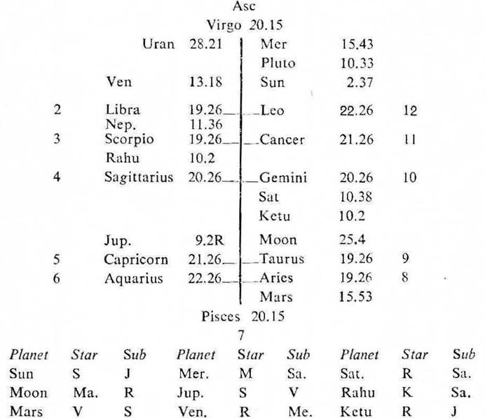

Female, Birth 19-9-1973 Wednesday; 7-50 A.M. I.S.T; 23°N 51′; 72°E 10′; Ayanamsa 23°23′.

If the cuspal Sub lord of the Asc. be the significator of the badhaka and maraka houses, there is danger to the life during the joint period of the significators of the badhaka and maraka houses. If these significators be the cuspal joint rulers of the Asc. or the 8th cusp, their joint period is very critical.
Asc. (a) The cuspal sub lord of the Asc. is Ketu. It is in the star Rahu (which is the significator of the badhaka house 7 and the owning 7. So Ketu is the significator of the badhaka and maraka houses.
(b) We may also examine the strength of Ketu's star lord Rahu and its sub lord Jupiter. Rahu is the significator of the badhaka and maraka house. Jupiter owning 7 is in the star Sun owning and occupying 12, and in the sub Venus owning 2; so it is also the significator of the maraka house 12 and connected with the maraka house 2 and the badhaka house 7. Thus both Rahu and Jupiter are evil. Consequently, the cuspal sub lord of the Asc. Ketu becomes evil and it denotes short life.
1. In this birth map the 8th cusp is jointly ruled by Mars (sign lord), Venus (star lord) and Rahu (sub lord).
From the very birth this child is running the joint period of Mars (the cuspal sign lord of 8) and Rahu (the cuspal sub lord of 8); and the joint period of Mars, Rahu and Venus (the cuspal star lord of 8) will be current from 20-11-1973 upto 23-1-1974. So there is danger to its life if they are the significators of the badhaka and maraka houses.
2 (a) The cuspal sign lord of 8 Mars occupies 7. It is in the star Venus owning 2. It is in the sub Sun owning and occupying 12. So Mars is the significator of the maraka house 2 and connected with the badhaka house 7 and the maraka house 12.
(b) The cuspal star lord of 8 Venus owns 2. It is in the star Rahu (being in Sagittarius represents Jupiter owning 7 and being aspected represents Saturn which aspects 7 and 12 and owns 6). It is in the sub Mercury in 12. So Venus is the significator of 7 the badhaka house and the maraka house 12 and connected with 12 and 2 the maraka houses.
(c) The cuspal sub lord of 8 Rahu is in the star Ketu (being in Gemini represents Mercury in 12 and being in conj. represents Saturn which aspects 7 and 12 and owns 6). It is in the sub Saturn. So Rahu is the significator of the badhaka house 7 and the maraka house 12 and connected with the same houses.
(d) Thus the cuspal joint rulers of the 8th house are the significators of the badhaka and maraka houses and they are the joint period rulers current from 20-11-1973 to 23-1-1974. So this time is very critical for its life; because the cuspal sub lord of the Asc. denotes short life.
3. Further all these three joint period rulers are inter related. The period ruler Mars is in the star of and aspect with the inter period ruler Venus. The inter period ruler Venus is in the star of the sub period ruler Rahu. The sub period ruler Rahu is in the star of the cuspal sub lord of the Asc. Ketu. This is the strongest testimony which points out that the child will not at all survive this joint period of Mars, Rahu and Venus.
This child died on 10-12-1973 at 7-0 p.m. I.S.T. At that time Sun was transitting in Scorpio 24° 56′ in the Sub Rahu (the sub period ruler); Moon in Gemini 1° 57′ in the Star Mars (the period ruler); Mars in its own sign Aries 3° 15′; Rahu in Sagittarius 5° 41′ in its own Sub; and Venus in Capricorn 8° 30′ in its own Sub Venus (the inter period ruler). Thus the transit agrees with the joint period rulers.